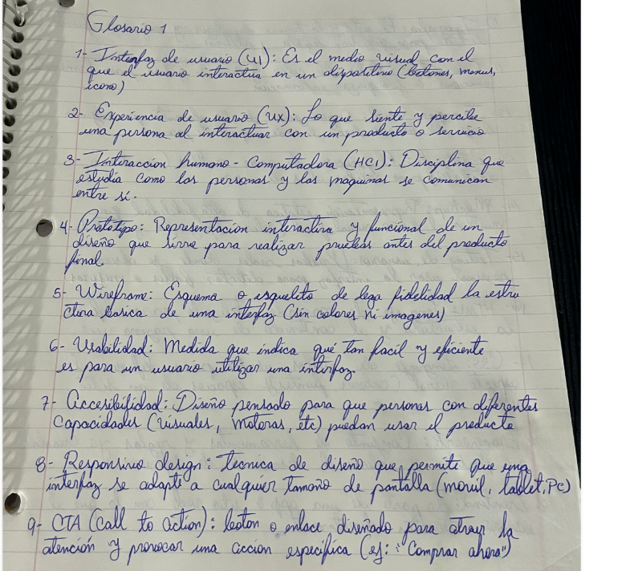
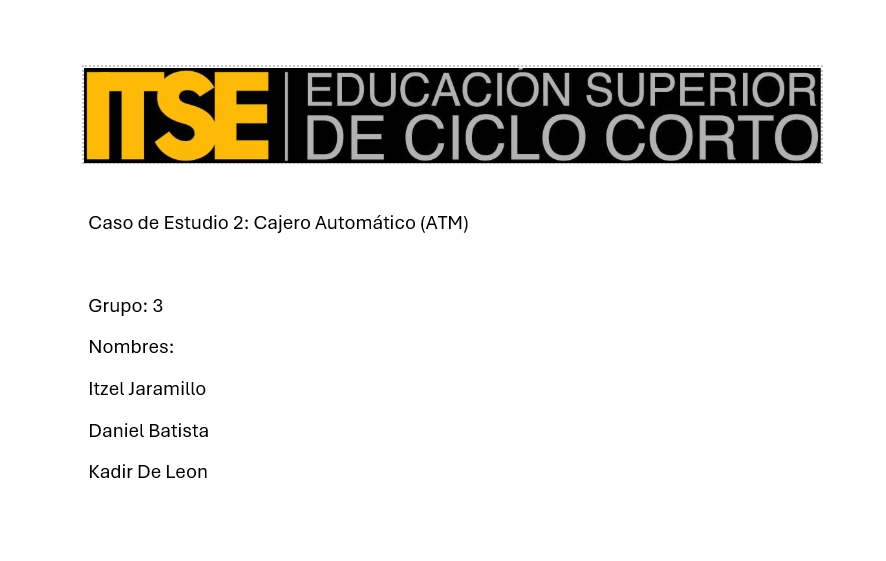
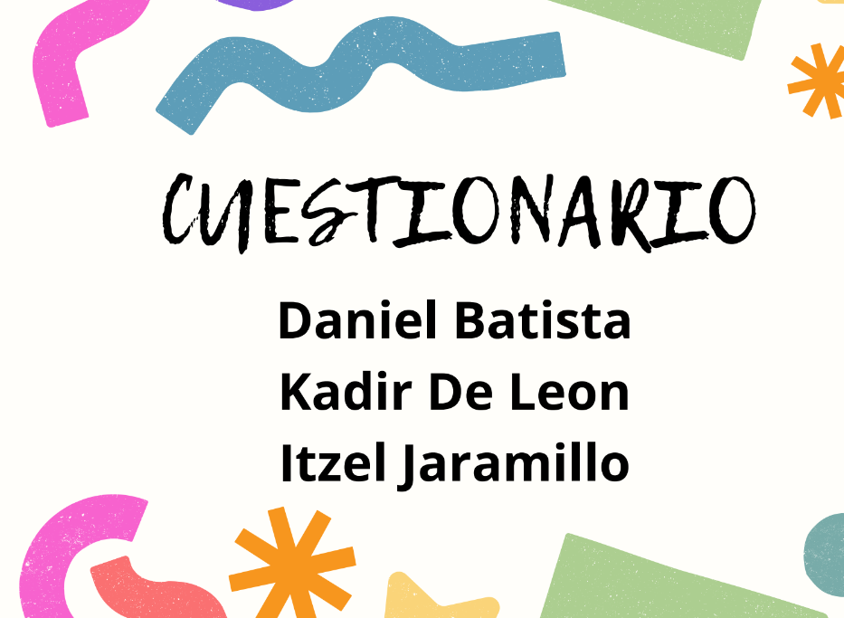
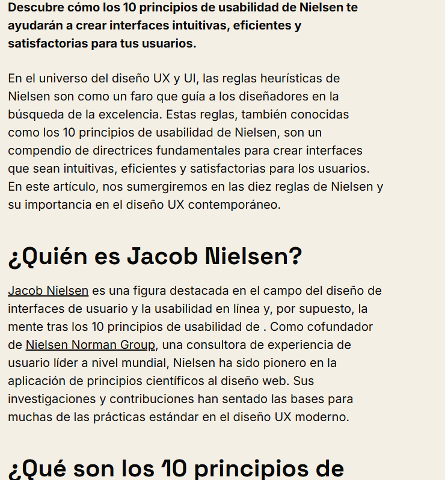
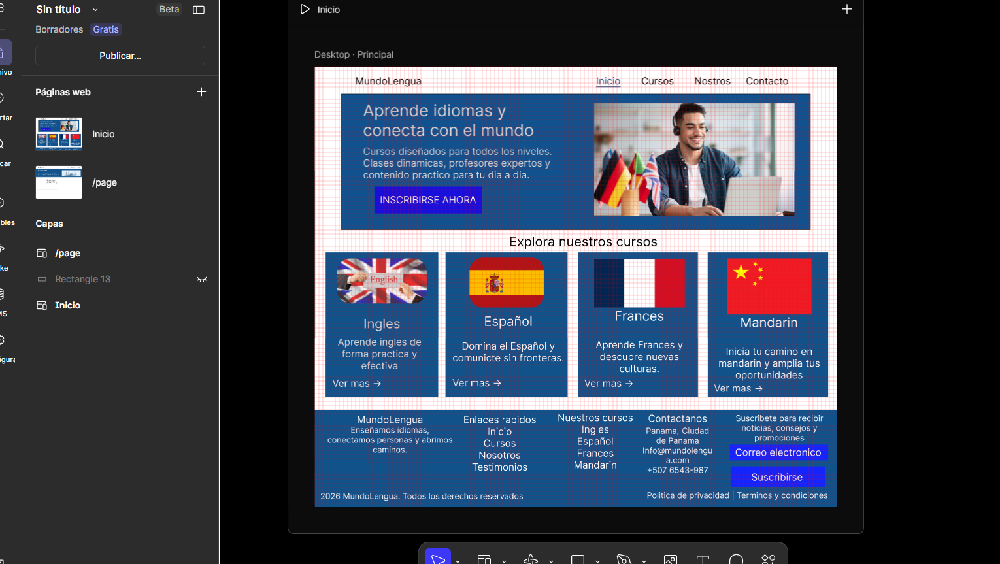
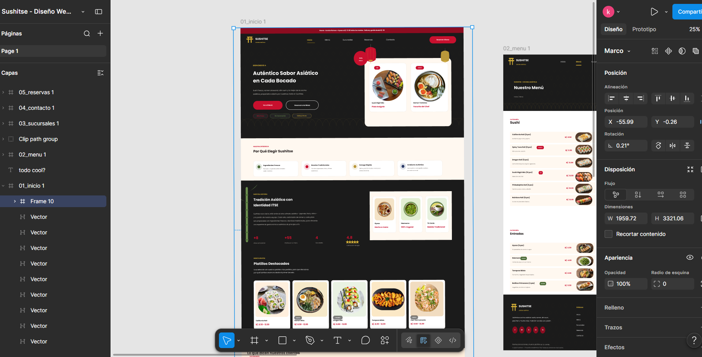
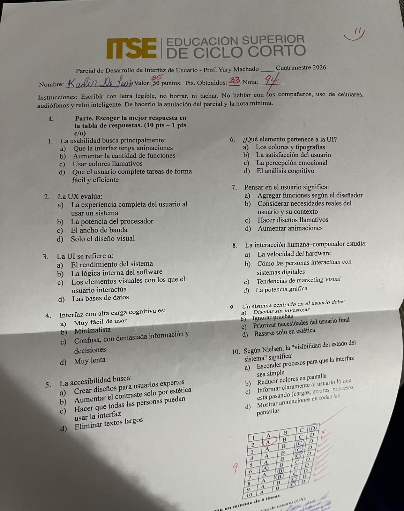
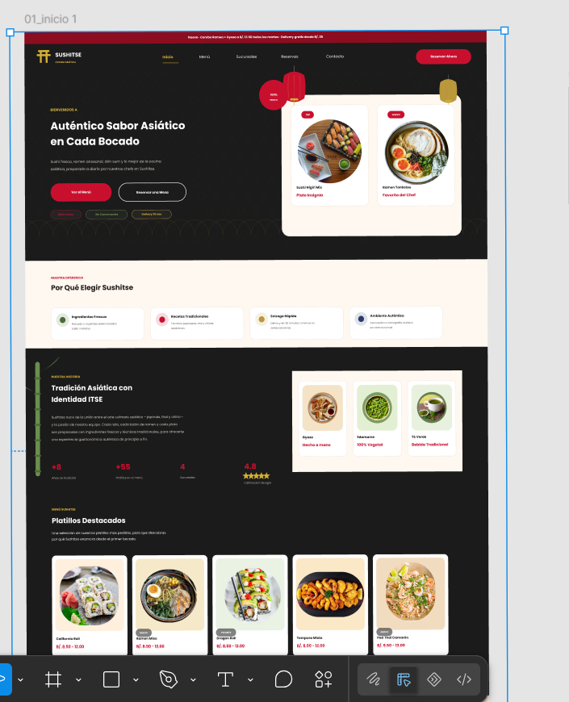

Introducción al Diseño de Interfaces
Primer acercamiento a los conceptos fundamentales del diseño de interfaces: qué es una UI, su relación con la UX y su papel en la experiencia digital.
En este portafolio digital de evidencias compila el trabajo realizado a lo largo de la asignatura Interfaz de Usuario, un espacio enfocado en comprender los principios fundamentales, psicológicos y técnicos que intervienen en la creación de experiencias digitales efectivas, accesibles y estéticamente sólidas.
A lo largo de este curso, se abordaron conceptos esenciales que van desde los fundamentos del Diseño Centrado en el Usuario (DCU) y la psicología del color, hasta la aplicación rigurosa de los 10 Principios de Usabilidad de Jakob Nielsen. Asimismo, el contenido integra el desarrollo práctico de competencias mediante la maquetación y prototipado de interfaces con herramientas de la industria como Figma y Draw.io, acompañados de sus respectivas evaluaciones parciales de conocimiento.
Este documento no solo reúne las tareas y evaluaciones ejecutadas, sino que refleja el proceso progresivo de análisis, interpretación visual y desarrollo de criterios metodológicos necesarios para diseñar interfaces funcionales orientadas a resolver necesidades reales de los usuarios.
Actividades y ejercicios realizados durante el curso, cada uno enfocado en una competencia distinta del diseño de interfaces.

Primer acercamiento a los conceptos fundamentales del diseño de interfaces: qué es una UI, su relación con la UX y su papel en la experiencia digital.

En este taller aprendimos que la visualización de datos va mucho más allá de hacer gráficos bonitos: se trata de transformar información compleja en recursos visuales claros e intuitivos. A través del análisis e interpretación de diferentes representaciones visuales, comprendimos cómo elementos como la forma, la jerarquía, el espacio y el contraste guían la atención del usuario, permitiéndonos descifrar patrones rápidamente y tomar decisiones informadas en el diseño de interfaces.

En este cuestionario analizamos cómo el color no es solo un elemento decorativo, sino una herramienta psicológica fundamental en el diseño de interfaces.
En esta práctica aplicamos la metodología del Diseño Centrado en el Usuario (DCU) realizando un análisis práctico de experiencia e interfaz de usuario (UX/UI) enfocado en la plataforma de Copa Airlines. A través de este trabajo, evaluamos cómo la arquitectura de información, la navegabilidad y los elementos visuales de un sitio real impactan directamente en la experiencia de viaje digital de las personas, identificando aciertos de diseño y áreas de oportunidad para optimizar la interacción entre el usuario y la plataforma.

En esta actividad analizamos y aplicamos los 10 Principios de Usabilidad de Jakob Nielsen, que son las reglas heurísticas fundamentales para evaluar la calidad de cualquier interfaz interactiva. A través de este trabajo, aprendimos a identificar de forma práctica cómo aspectos esenciales —como la visibilidad del estado del sistema, el control del usuario, la prevención de errores y la consistencia visual— determinan si una plataforma es fácil e intuitiva de usar, permitiéndonos diseñar productos digitales accesibles, eficientes y sin fricciones para las personas. De este tema hicimos una investigacion que era un entregable en hoja.

En este taller puse en práctica la maquetación y el prototipado de una plataforma web educativa ("MundoLengua") utilizando herramientas clave de la industria como Draw.io y Figma. En esta etapa aprendimos a estructurar la arquitectura visual de un sitio, organizando componentes esenciales como la barra de navegación, héroes publicitarios, secciones de cursos e información de contacto. El ejercicio nos permitió llevar los conceptos teóricos de usabilidad y distribución del espacio a una propuesta visual interactiva, comprendiendo la importancia de iterar desde diagramas estructurales hasta prototipos digitales definidos.

En esta práctica diseñamos la interfaz completa para el sitio web del restaurante gastronómico "Sushitse" utilizando Figma. Aprendimos a estructurar un diseño UI/UX atractivo y funcional para el sector gastronómico, aplicando una paleta de colores coherente con la temática asiática, organizando el catálogo de platillos destacados, secciones de valor ("Por Qué Elegir Sushitse") y botones de acción clave (Call to Action) como "Reservar Mesa" o "Ver el Menú". Este trabajo nos permitió consolidar el uso de tarjetas, jerarquías tipográficas y composiciones adaptadas para cautivar visualmente al cliente y facilitar su proceso de reserva y pedido.

Evaluación correspondiente a la primera etapa del curso, enfocada en los fundamentos teóricos del diseño de interfaces.

Evaluación correspondiente a la segunda etapa del curso, con énfasis en la aplicación práctica y herramientas de diseño.
Cursar Interfaz de Usuario permitió comprender que un buen diseño no se mide únicamente por su apariencia visual, sino por su capacidad de resolver problemas reales de las personas que interactúan con un producto digital.
Cada evidencia recopilada en este portafolio representa un paso en la construcción de un criterio propio de diseño: observar, analizar, prototipar y validar. El proyecto final integró estos aprendizajes en una solución concreta, demostrando que la teoría cobra sentido cuando se traduce en una experiencia usable y agradable.
Este recorrido deja como resultado no solo un conjunto de trabajos, sino una forma más consciente de pensar el diseño de interfaces.